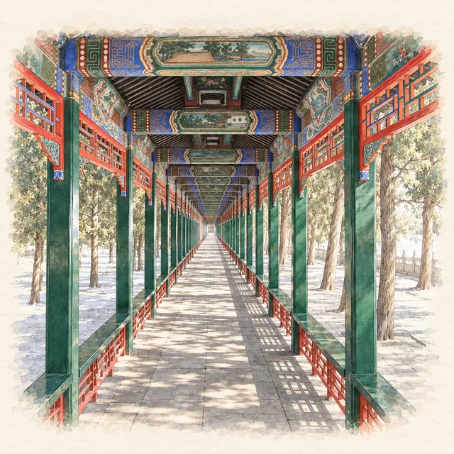

Summer Palace · highlight
The Long Corridor paintings: stories behind them
Last checked:

What is the Long Corridor?
It is a covered walkway that runs 728 metres along the north shore of Kunming Lake, in 273 sections, from the Gate of Inviting the Moon in the east to the Marble Boat in the west. Every beam is painted, with pictures of landscapes, birds and flowers, and scenes from Chinese novels, legends and history. Walking it end to end takes 15–20 minutes; looking at the paintings can take as long as you like.
Why was it built?
The Qianlong Emperor built the corridor in the 1750s so that his mother and the court could walk beside the lake in any weather, in shade in summer and out of the rain. It was burned by British and French troops in 1860 and rebuilt in the 1880s. Four octagonal pavilions along the way mark the seasons, and break up the long perspective that makes the corridor such a famous photograph.
What do the paintings show?
Four kinds of picture repeat along the beams:
- Landscapes, many of them scenes of West Lake in Hangzhou, which the emperor admired on his tours of the south.
- Flowers and birds: peonies for wealth, lotus for purity, cranes for long life.
- Figures and stories from the classic novels, history and folk tales: the most fun to look for.
- Architecture: imagined pavilions and gardens.
Which stories should I look for?
You will not identify most of the scenes without help, but a few are easy to recognise once you know what to look for:
- Journey to the West. Look for a monkey with a staff, Sun Wukong, the Monkey King, usually beside a monk on a white horse, a pig-faced companion and a man carrying luggage. They are on their way to India to fetch Buddhist scriptures.
- Romance of the Three Kingdoms. Warriors on horseback, often a red-faced general with a long beard and a halberd: Guan Yu, the model of loyalty. A scene of three men calling at a thatched cottage in the snow shows Liu Bei's three visits to win the strategist Zhuge Liang.
- Dream of the Red Chamber. Elegant young women in gardens, often reading, playing music or burying flowers, from the great novel of a declining noble family.
- Water Margin. Outlaws in action: a man fighting a tiger is Wu Song, who killed it with his bare hands.
The same story may appear several times, painted by different artists in different repaintings over the years.
How should I walk it?
Start at the east end, near the Hall of Happiness and Longevity, and walk west toward the Marble Boat, with the lake on your left. Pick one kind of scene to look for, say the Monkey King, rather than trying to read every beam. Half-way along, the corridor passes the foot of the stairs up Longevity Hill to the Tower of Buddhist Incense.
When is it least crowded?
In the early morning, soon after the park opens at 06:00 or 06:30, before tour groups arrive around 09:00. The Long Corridor is inside the park ticket, with no extra charge.
Is there more about the corridor in the app?
Penyola's Summer Palace guide has the Long Corridor on its hand-drawn map of the lake, with an illustrated story, and it is a stop on all three suggested walks. See the one-day route.
More planning guides
Sources
Checked on these official pages on 9 November 2026: